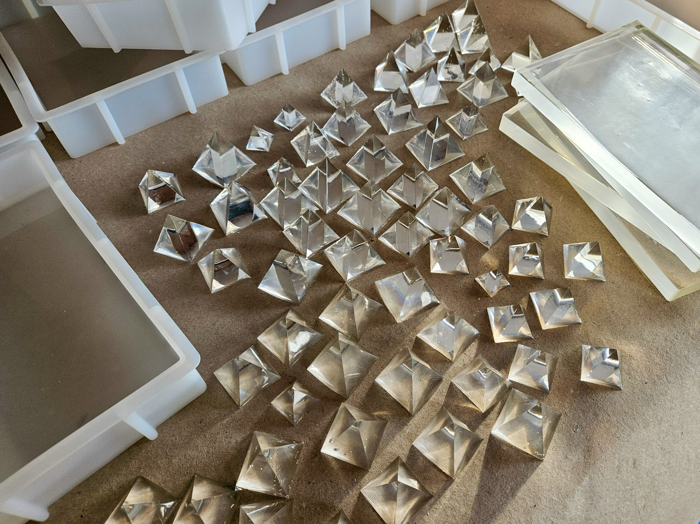
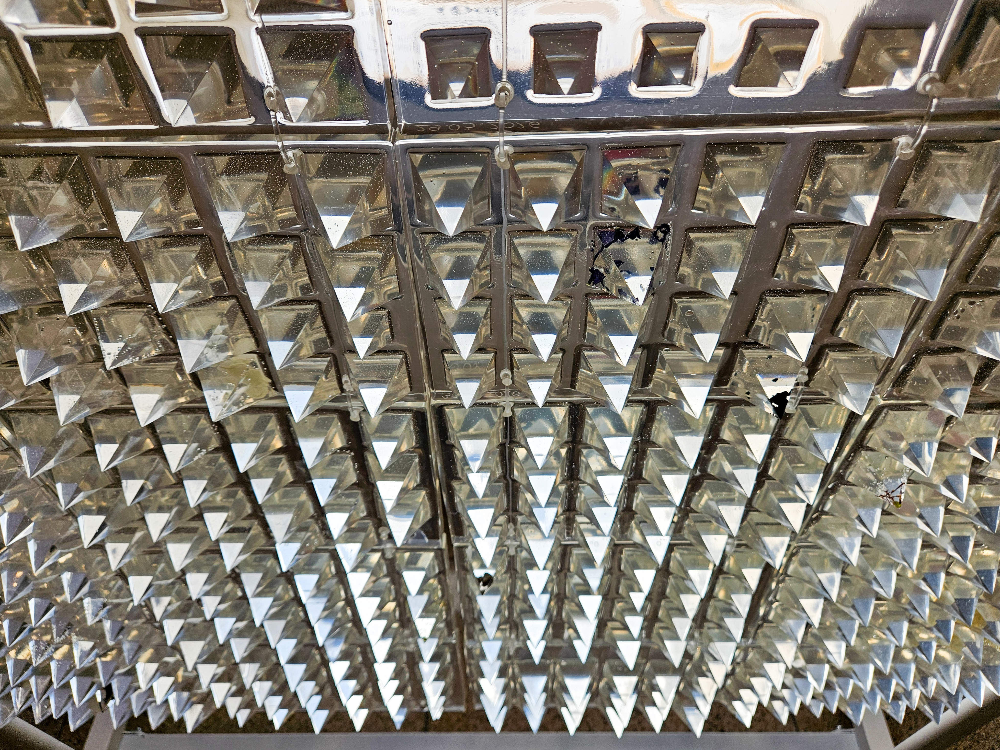

130,000+ minutes of listening accumulated by June 20, 2026 (data from stats.fm).
OF THE PROJECT
LISTENING NOW:
loading...
live listening data from Spotify
1 PANEL = 1 DAY OF THE PROJECT
1 PYRAMID = 1 HOUR OF LISTENING

Listening data is transformed into an installation composed of epoxy resin panels.
Each panel represents one day of the project.
Each pyramid represents one hour of listening.
Pyramid height reflects the number of minutes listened during that hour.
The installation expands continuously as new listening data is generated.




Michalina Kulpa-Piwowarczyk — artist, curator,
university lecturer.
michalinakulpa@gmail.com